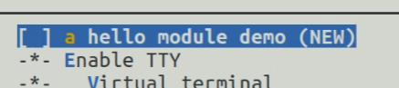
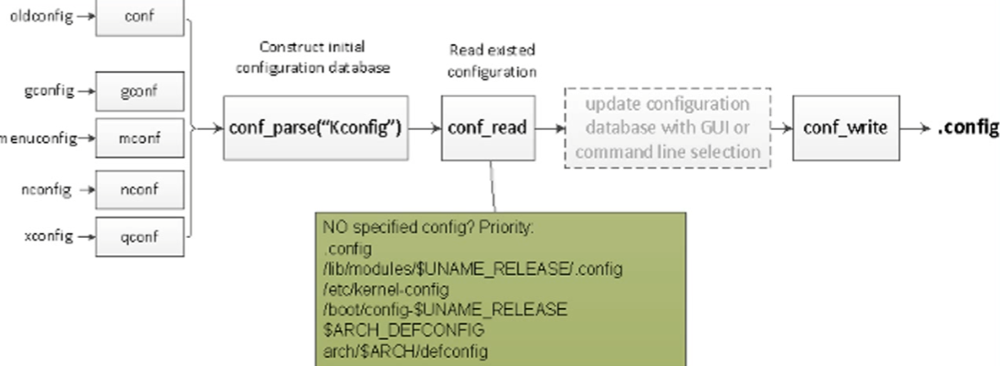

05 Kbuild
Kbuild
Kbuild（Kernel Build System）本身是Linux的一些脚本，用于管理和协调内核的编译过程。随着Linux的发展，它如今已经发展成了一个子系统，同时也被其他开源软件所采用，比如U-Boot、BusyBox等
Kbuild基于Makefile，并做了许多扩充：
- 菜单式配置：Kconfig
- 预定义目标：
- xxx_defconfig，menuconfig
- vmlinux、zImage、uImage
- modules、install、modules_install
- clean、mrproper、distclean
- 预定义变量：
- obj-y、obj-m、xxx-objs
- ARCH、CROSS_COMPILE
- 跨平台工具、递归式Makefile
Kbuild的本质：
- 一个可扩展、可配置的Makefile框架
- 递归式Makefile、菜单式配置
Kbuild的构成：
- Makefile：顶层目录下的Makefile
.config：内核的配置文件arch/$(ARCH)/Makefile：跟平台架构相关的Makefilescripts/Makefile.*：通用编译规则 比如make install时实际上就调用了scripts/Makefile.install- Kbuild Makefile：分布在各个子目录下
- Kconfig：配置菜单，定义每个config symbol的属性(类型、描述、依赖等)
预定义变量
下面介绍一些重要的预定义变量
1 | obj-y:=hello.o # 把hello.o直接链接进内核 |
在新版内核的中，我们常常看见一些叫
Kbuild的文件，它实际上做了以下改进
- 在新版本的内核中，通常把上面这几个内核模块对象（如
obj-y）的定义放到单独的文件kbuild中 - 内核在构建时，是先去
Kbuild文件中找上面那几个变量，找不到再去Makefile找
预定义目标
Kbuild定义了许多预定义目标，比如make zImage、make modules…都算预定义目标，可通过make help查看

下面整理一些Linux中makefile定义的常见命令
1 | # 清理$(M)路径下编译产生的中间文件（不影响配置） |
配置变量
配置变量（Config Symbols）是我们在编译内核时，经常看到的类似CONFIG_xxx的变量，通常保存在.config文件，用来对于编译行为进行控制
在加载默认配置时，通常要指定ARCH比如
1 | make ARH=ARM IMX6ULL_emmc_defconfig |
因为IMX6ULL_emmc_defconfig放在arch/arm/configs下，如果不指定ARCH，系统会去arch/x86下找
Kconfig
- 用来生成配置菜单，配置各种config symbol
- 生成对应的配置变量：
CONFIG_XXX - 每个目录下都有一个Kconfig文件
- 各个Kconfig文件通过source命令构建多级菜单
- 解析工具：
scripts/kconfig/*conf
如果想快速知道配置菜单中某个选项位于哪里，可以看Kconfig文件中对应项的位置
语法
- config：用来自义菜单选项
- choice/endchoice
- comment
- if/endif
- source：生成一个树型菜单
参考链接：
举个例子
1 | config HELLO //会在.config中生成CONFIG_HELLO配置变量 |

.config
如何生成
通过scripts/kbuild/*conf工具解析各级Kconfig文件，最后生成.config文件

如何参与编译工作
生成的.config文件是不能直接参与编译的，需要进一步生成其他文件
include/config/auto.conf：用来配置Makefile- 顶层Makefile会include这个文件，这样内核Makefile中就有
CONFIG_XXX那些变量了
- 顶层Makefile会include这个文件，这样内核Makefile中就有
include/generated/autoconf.h：供内核里的C程序条件编译（开发驱动时可能需要）include/config/*.h：空头文件，用于构建依赖关系
执行流程
- 根据用户(内核)的配置生成相应的.config文件
- 将内核的版本号存入include/linux/version.h
- 建立指向
include/asm-$(ARCH)的符号链接，选定平台 - 更新所有编译所需的文件
- 从顶层Makefile开始，递归地访问各个子目录，对相应的模块编译生成目标文件
- 链接过程，在源代码的顶层目录链接生成vmlinux
- 根据具体架构提供的信息添加相应符号，生成最终的启动镜像，往往不同架构之间的启动方式不一致。
- 这一部分包含启动指令
- 准备initrd镜像等平台相关的部分
内核中的Makefile文件
在linux中，由于内核代码的分层模型，以及兼容很多平台的特性，Makefile文件分布在各个目录中，对每个模块进行分离编译，降低耦合性，使编译方式更加灵活。
Makefile主要是以下五个部分：
- 顶层Makefile : 在源代码的根目录有个顶层Makefile，顶层Makefile的作用就是负责生成两个最重要的部分：编译生成vmlinux和各种模块
- .config文件 : 这个config文件主要是产生自用户对内核模块的配置，有三种配置方式：
- 编译进内核
- 编译成可加载模块
- 不进行编译
- arch/$(ARCH)/Makefile : 从目录可以看出，这个 Makefile 主要是根据指定的平台对内核镜像进行相应的配置,提供平台信息给顶层 Makefile
- scirpts/Makefile. : 这些 Makefile 配置文件包含了构建内核的规则
- kbuild Makefiles : 每一个模块都是单独被编译然后再链接的，所以这一种 kbiuld Makefile几乎在每个模块中都存在.在这些模块文件(子目录)中，也可以使用 Kbuild 文件代替 Makefile，当两者同时存在时，优先选择 Kbuild 文件进行编译工作，只是用户习惯性地使用 Makefile 来命名
层级关系处理
一个Makefile只负责处理本目录中的编译关系，自然地，其他目录中的文件编译由其他目录的Makefile负责，整个linux内核的Makefile组成一个树状结构，对于上层Makefile的子目录而言，只需要让kbuild知道它应该怎样进行递归地进入目录即可。
kbuild利用目录指定的方式来进行目录指定操作，举个例子：
1 | obj-$(CONFIG_FOO) += foo/ |
当CONFIG_FOO被配置成y或者m时，kbuild就会进入到foo/目录中
- 注意：这个信息仅仅是告诉kbuild应该进入到哪个目录，而不对其目录中的编译做任何指导